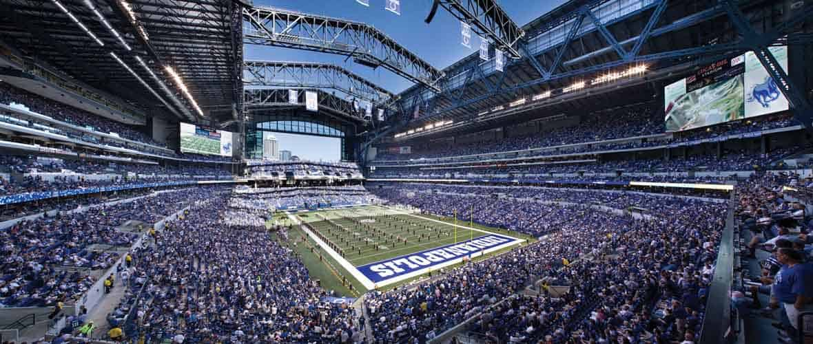

Uma história com sorte

O Indianapolis Colts é um time da NFL, 2x campeão do SuperBowl, com base em Indianapolis, Indiana.
Fundado em Baltimore, em 1953, o Indianapolis Colts passou 50 anos e ganhou 3 NFL champiochips e um SuperBowl no estado de Maryland.
Em 1983 o time veio para o estado de Indiana e ganhou 2 AFC championchips e 1 SuperBowl.
Lucas Oil Stadium
Uniformes
Com as cores principais sendo azul e branco, esses são os uniformes principais da equipe.